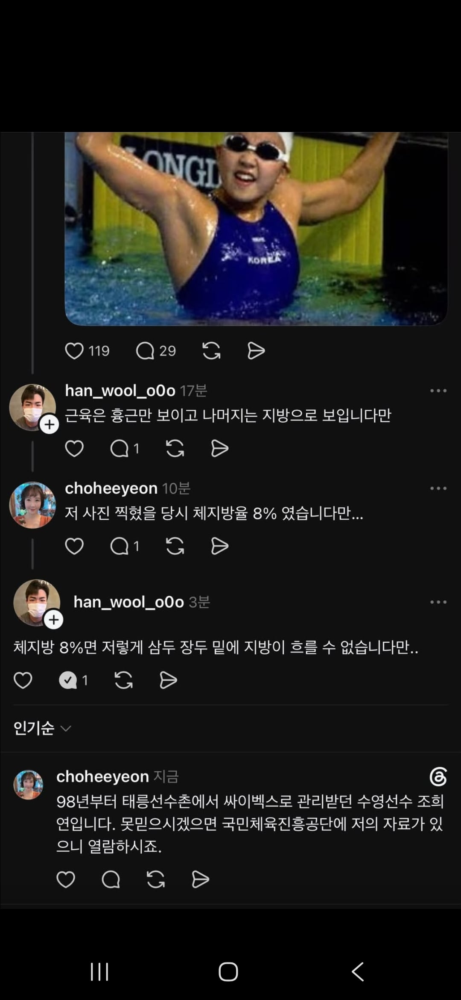

이 바닥 벅업다

이 바닥 벅업다
금메달리스트한테 지방이 흘러내린다 저런거 보면 트레이너 오래는 못하겄다
저건 트레이너 말이 맞음 ㅋㅋㅋㅋㅋ
그리고 저 수영선수 여자분 기억나는게...내가 일반인들도 꽤 상대하는 전문직인데, 쓰레드통해서 연락와서 상담을 했었음.
돈벌어야해서 정말 어지간하면 수임하는데, 정말 상담후에 이건 진행했다간 개피곤하겠다 싶어서 처음이자 마지막으로 수임거절함 ㅋㅋ
수임 안 하고 스윔 하러 가셨나보네
태릉선수촌도 못가본 놈들이 왜저리 깝을 치지? 거긴 채신운동기술의 최전선인 곳일 텐데?
고지능자
기록 까보면 답나오겟네
여자가 한자리수면 뼈보임
네네 그러시겠죠 ㅋㅋㅋ
이건 뭔 반응임.. 진짠데..
멍청한새끼...
피곤하게 사는거 같음 ㅋㅋ
평소 지능보면 국대고 뭐고 남자 말이 맞는것 같기도 하네
8프로면 얼굴에 살이 있을 수가 없긴한데..
엘리트 체육인 = 자아비대 빡대가리 확률 증가
여자 8프로면 얼굴이 피골상접임.. 내가 13-15퍼를 봤음 해골임 걍
경험도, 지식도 없는 것들이 지피티한테 물어보고 진짜네 가짜네 하고있네 ㅋㅋ 웃긴다 ㅋㅋ
인바디는 운동전이냐, 운동후냐, 식사전이냐 식사후냐에 따라서 차이가 쥰나게 많이나는 절대신뢰는 불가능한 데이터다.
단백식단 2~3시간 후 운동 직후에 인바디 하면 남자는 평소 체지방률 15%가 8%이하도 찍을 수 있는게 인바디고.
선출이면 여자라도 8%가 저 사진으로 불가능한 숫자는 아님.
물론 극단적인 케이스이긴 하겠지. 본인이 자료가 있다니깐 의심이 되는 사람은 찾아보면 될것이고.
보디빌딩 선수들은 체지방 8%인 상태에서 수분을 최대한 빼기때문에 뼉다귀처럼 마른 몸에 쫙쫙 갈라진 몸을 만들수도 있는거고,
보디빌딩 종목이 아니고 근육에 수분량이 많은 사람은 펌핑하고 데스페이스 안나오게 8%를 만들 수도 있다.
보디빌딩 특성상 데피니션이 보이면 채점에 유리해서 수분량을 극도로 줄이기 때문에 똑같은 8%라도
당연히 타종목 선수들의 8%보단 훨씬 삐쩍 꼴아보일 수 있지
하지만 보디빌딩 종목이 아니라면 굳이 수분량을 감량하지 않아도 되기 때문에 저런 사진 상태로도 특정 조건에선 8%가 나올수 있다.
왜? 근육에 있는 수분량도 인바디는 근육으로 측정하니깐.
근육에 수분이 꽉 차 있으면 보디빌딩 선수처럼 쫙쫙 갈라져보이기 어렵다는 사실정돈 이해하겠지?
거기에 운동으로 인해 펌핑이 되어있으면 근육량이 더 높게 측정되기도 할것이고.
요점은 사진으로 체지방 분석하는건 나 우물안 개구리요 하는거랑 똑같음.
반박은 체지방 10% 이하, 체육학 석사 이상만 부탁드림.
물론 선수들은 일반적으로 체지방률로 자랑할일도 없지. 실적으로 증명하니깐.
현재 체중 71, 체지방 7.4% 골격근 37.8인데, 인바디 방금 찍은거 인증 올리려했는데 댓글은 사진첨부가 안되네..
여튼 지도 10년차 넘었는데 바디빌딩 트레이너 딱새새끼들은 골빈놈들이 많다.
난 바디빌딩 전공은 아니지만 종목특성상 폭발력, 퍼포먼스 위주 트레이닝을 하기도 하고 시키기도 많이 하는데
내가 다른 헬스장 가서 벤치 140 들고 있으면 그렇게하면 다쳐요 이지랄하면서 달려오는 병신 트레이너들도 수없이 봄.
그럼 보여주세요 하면 돼지새끼들 아닌이상 120도 못드는 새끼들이 태반인...하..
진짜 선수들 트레이닝이 어떤지, 궁금하면 한체대 필승관 와서 구경하십쇼.
1층은 웨이트 트레이닝, 3층은 인바디도 찍어볼 수 있으니 찍어보고 가시고..
근데 여성 체지방률 8퍼가 저럴수는없음
답정하고 말하기 대단하다ㅋㅋㅋㅋㅋㅋ
넌 남자고 ㅋㅋㅋㅋㅋㅋ
여자가 체지방 8퍼에 수영 훈련을해?ㅋㅋ
같은 체지방률이라도 근육이 적으면 지방이 더 많아보일수있고
상대적으로 피하지방에 지방이 많으면 눈바디가 다를수있는데
운동선수가 근육이 적겠냐
여자 체지방8퍼면 피하지방에도 쌓일 지방이 없다
니가하는말은 남자기준 체지방 2퍼대 나오는데 저몸이라는거다ㅋㅋ
기록있어도 인바디 오류임ㅋㅋ
내가 수영선수들도 훈련시키는 사람이다 ㅋㅋ
나도 오류가 있을 수 있는 절대신뢰 불가능한 데이터라고 말한거잖아.. 사진만 보고 논쟁하는건 의미없다고
좆같은소리하고 자빠졌네
체지방 8%인 상탱테서 수분을 빼면 측정방식때문에 체지방이 올라가 병신아
애초에 여자체지방 8% 남자 체지방 3%대가 수분까지 다 빠진상태가 되어야 가능한숫자인건데
뭔 씨발 데드페이스 안나오고 수분량 많은상태로 8% 이지랄하고있네 ㅋㅋㅋ
그럼 니가말하는 데드페이스 안나오고 수분량 많은 8%에서 수분빼면 뭐 5% 6%나오냐 여자가?
운동을 업으로 하는새끼들 왜이렇게 멍청하지?
내가 적은 요점 안보이냐?
어제 술먹고 취김에 적었더니 말을 이상하게 적긴 했다.
수분 채우고 8프로 만드는게 아니라 8프로인상태서 수분 채웠다고 얘기하는게 맞다.
뭐 확인해봤더니 캘리퍼로 재서 8프로라니깐 인바디라는 가정 자체가 무의미해졌다만
수분을 뺀상태서 재서 8프로라는게 아니라 8프로인상태서 수분을 빼면 더 쫙쫙 갈라져보인다고 하는거고
반대로 통통해보이는 경우는 8프로인상태서 재고 수분량 꽉 채웠을때를 말하려한게 원래 내 의도였음.
그래서 위에 내가 적은 요점이 사진으로만 인바디를 예측하는게 의미없다는 뜻으로 말한거임.
그만큼 인바디라는게 상황에 따라 사람이 다르게 보일수도 있다는 절대신뢰가 불가능하고 얼마든지 속이거나 오류를 만들 수 있는 지표라는 뜻으로 얘기한건데 왜 8프로에만 긁혀서 급발진하는지 모르겠네
얼마나 많이 배우고 똑똑하신지 너하고 의견이 다른거에 긁혀서 글의 논점도 못보고 욕부터 갈기는거 보면 대충 니 인생의 수준이 보이지만
내가 적어도 너보단 운동생리학하고 인체생리학에 대해선 공부 더 했을거고. 그 외에서도 딱히 나을것같지도 않네..
니도 뭐 3대 어쩌구 하는거보니 운동 나름 진심으로 하는사람같은데,
넌 얼마나 안멍청한지 인증가능하냐?
업으로 하는 새끼들보다 더 멍청한거같은데?
근데 국민체육진흥공단 홈페이지에 조희연씨 자료 없는데 어딜보라는거지
태릉에 있는거 자체가 인자강 애들만 모인곳인데 진짜
정신나간 트레이너들 많아서 이상화한테도 스쿼트 지적하는 애들인데 어련하겠어 ㅋㅋㅋ
추가로 상식적으로 그럴 수 없다. 이런경우 많음. 국대 운동 하는거 보고 상식적으로 그렇게 운동하면 안된다 많이함.
근데 그 국대들은 상식을 뛰어넘어 국대가 된 사람들임니다
남자도 아니고 여자 8%면 진짜 뼈밖에없어야하는수준아닌가? 10% 사진들만봐도 와 저건좀 싶던데
저 사진이 좀 두터워 보이게 나왔거나, 시기가 안 맞겠지 뭐
여자 8프로면 데피가 존나 선명할텐데 사진상엔 그렇게 안보이긴함. 실재는 어떤지 모르겠지만 사진상으로 그래 보인다임
애새끼들 댓글 ㅈㄴ웃기넼ㅋㅋㅋㅋ
빗썸 실수한걸로 비트코인 블록체인 훼손했다고 알지도못하며 개소리 짖는거보고 와시발 병신들 했는데 수준 안변하는구만ㅋㅋㅋㅋㅋㅋㅋㅋ
위에 병신들은 항상 좆같은 소리만
늘어놓네
8%면 저럴 수 없는 거 맞는데 팩트임
아마도 선수가 착각한 듯
댓글 ㅈㄴ 웃기네 ㅋㅋ
작성자는 헬스인 까려고 글올렸는데 정반대 댓글이네 ㅋㅋㅋㅋ
이제 체지방률이라던가 남녀 차이라던가 운동에 대한 기본지식들은 대부분의 국민들이 어느정도 지식탑재가 됐구나
여자8%면 저 사진처럼은 힘들지...
찾아가보니까 캘리퍼라는 당시 측정방식을 쓴거라네
캘리퍼로 8%가 지금 15~16%래
좆문가들 그만 좀 깝쳤으면
트레이너 말이 맞는거 같은데
일단 지금 인바디 기준으론 절대 8% 안나옴
저것도 얼굴사진으로 쳐서 특정성 성립되냐
거의 전한길급 인사 아니신가 ㅋㅋㅋㅋ ㅈㄴ 여기서다보네
이미 결론나고 사과까지 끝난건데 시비튼것만 퍼와서 ㅂㅇ
ㅇㅇ 나도그렇게생각함 체지방율10%아래로 가보면 저런 느낌이 아냐 눈바디로 티가 확남..개드립애들도 보면 피융신들이 많은게 확실히 저런경험을 해본사람은 눈으로 딱 보면 답을아는데 그냥 수영선수 가 하는말인데 맹신하는게 웃김